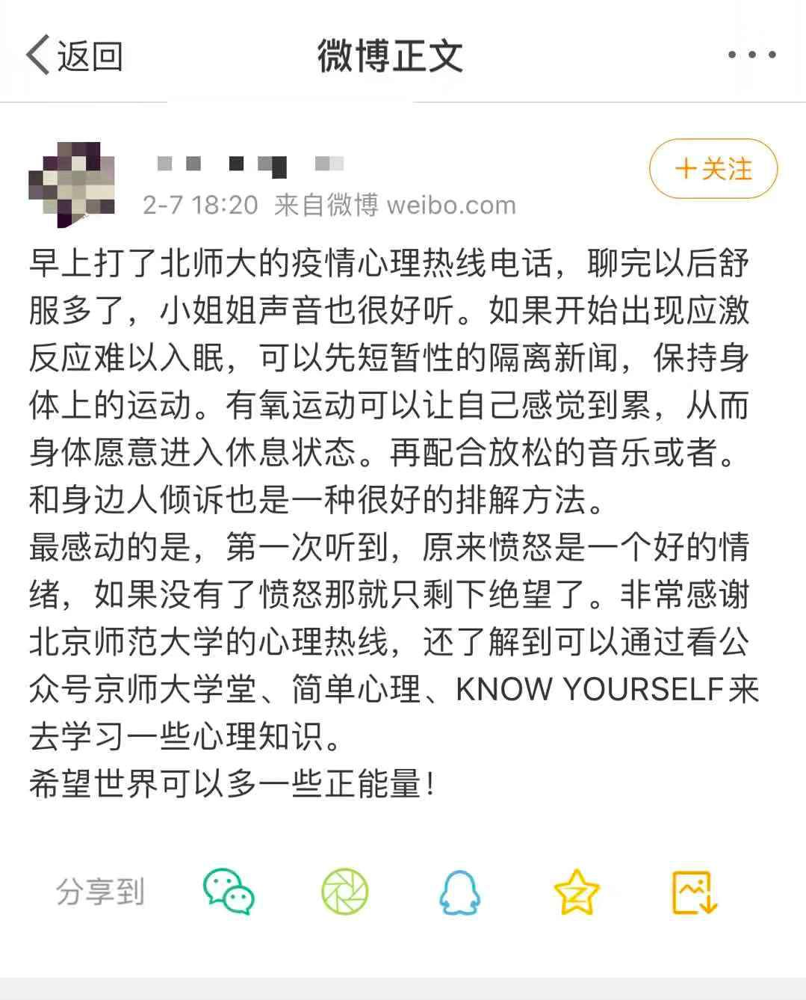
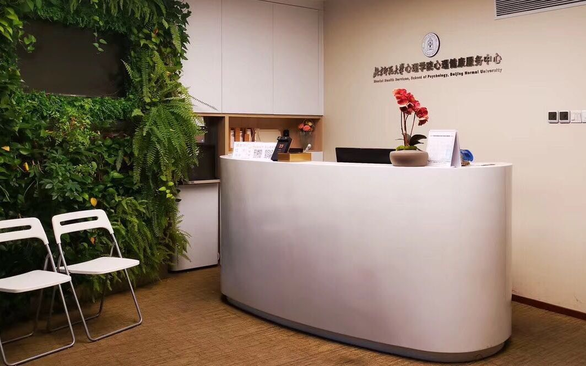
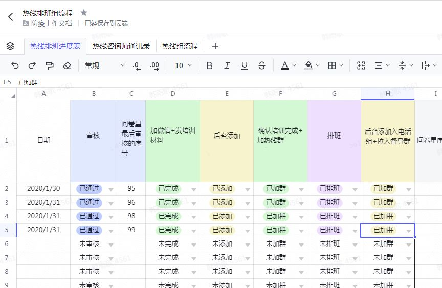
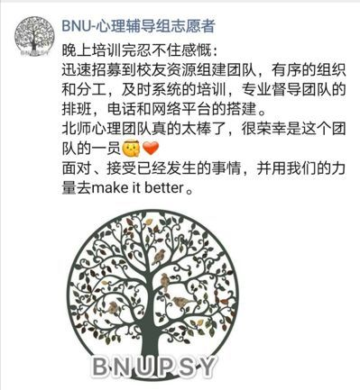

湖北一线心理咨询师：恐慌让他每半小时测一次体温 | 深度对话
原文链接 备份链接 记者/郭慧敏 编辑/石爱华 宋建华 **心理咨询师在接听咨询电话 ** 截至2月5日上午，全国新型冠状病毒肺炎确诊人数已达23696例，死亡491例，治愈859例。 1月23日，武汉关闭离汉通道后，一条24小时心理咨询 …

2 月 6 日晚上，小晕又一次失眠了。
想隔绝开手机上应接不暇的信息与情绪，后半夜小晕几乎一直盯着天花板，等待天亮。
这已经是疫情发生以来，小晕第三次失眠。
辗转反侧到六点，小晕拨通了北师大疫情心理热线的 400 电话。“我担心是我心理有问题了，微博搜到这个电话就赶紧打了。”
电话那一头是一位声音很好听的小姐姐，告诉小晕，如果开始出现应激反应难以入眠，可以先隔离新闻，尝试有氧运动让身体觉得疲倦，从而愿意进入休息状态，另外与人倾诉、听放松的音乐，也是有效的办法。

最重要的是，咨询师告诉小晕，这都是正常现象，小晕心安了，聊完以后也舒服多了。
“最感动的是，第一次听到，原来愤怒是一个好的情绪，如果没有了愤怒那就只剩下绝望了。非常感谢北京师范大学的心理热线，希望世界可以多一些正能量！”
这条每天 6 点-24 点开放的 400 热线电话，来自于北师大心理学部心理健康服务中心。
1 月 25 日大年初一，北京师范大学心理学部心理健康服务中心紧急启动疫情心理咨询服务项目，27 日咨询热线和网络咨询正式上线，为疫区医生和全社会提供免费的心理咨询专项服务和支持。
300 多人的大项目，如何统筹运转？
时间倒回到大年三十晚上，许多从北京师范大学心理咨询硕士项目毕业并获得这次心理咨询资质的咨询师，都接到了北师大防疫心理援助团队的紧急招募。
“鉴于新型冠状病毒肺炎疫情恐慌情绪的弥漫，面对当前疫情，学校开始组织筹备专业人员，为一线医护人员、患者、重点区域被隔离人员等提供心理支持服务。”
这次紧急招募在北师大毕业生、高校心理咨询中心、海外归国咨询师等较成熟咨询师群体中定向进行，申请者先在网上填写信息，由专业督导导师审核通过后，通过飞书在线培训、排班，再正式上岗。
北京师范大学心理学部心理健康服务中心是飞书最早的一批高校用户，使用一年多来，已逐步习惯在线协同的管理方式，过往使用经验得以让团队快速组织、运转起来。

△ 北京师范大学心理学部心理健康服务中心
大年初一当天，北师大防疫心理援助团队紧急联系中国移动开通 400 号码，在一天内迅速开通了热线。同时，项目组迅速召集了专业的委员会和工作组，成立了四个核心小组：心理支持热线组、网络心理辅导组、科普宣传和专业督导组。
每一个志愿者咨询师从提交资格审核申请到正式上岗服务，整个流程统筹都是通过飞书完成，实现在线、透明的流程管理。
过去，不同环节是割裂的，热线组招募咨询师、填写信息，资料审核后交给下一位同事，添加咨询师微信，排班同事再排班，过程中交换Excel 文件，互相之间不了解进展，容易出现漏人的情况。

△ 北京师范大学心理学部心理健康服务中心利用飞书在线文档统筹项目进展
利用飞书在线表格统筹项目进展，这是第一步。
加入项目的志愿者都需要接受校内教授的伦理培训才能上岗，项目组也撰写了大量培训文档，如《心理热线的伦理原则》、《热线中的心理危机干预》、《危机干预要点及案例》等。
以往，心理学部制作、分发培训材料是通过网盘链接分享，容易遇到链接短时间内分享次数过多被封禁、版本迭代混乱等问题。
这一次，紧急筹备上马的“抗疫”项目，用飞书在线文档高效协同，迅速制定了培训方案，同时通过飞书云空间将培训资料及相关资料分发给所有咨询师，实现文件共享。后续加入的志愿者咨询师也可以在相应的飞书协作群里，直接获取培训资料。
一个近 300 人的团队在两天内搭建起来。
热线和辅导团队有 200 余名心理咨询师，数量还在陆续增加中。这些咨询师都经过了北师大心理学部心理咨询专职教师的严格筛选，有专业的助人经验，其中绝大部分接受过北师大心理学部研究生学历项目培养，少部分为海内外北师大校友。
正式上岗后，咨询师们按轮班制排班，热线组每班三小时，网络辅导组每班六小时，排班和从旁督导的专家也都是通过飞书完成。
每一天，热线电话从 6:00 就开始响，每位咨询师在工作时段都是饱和的，基本上每通电话之间的空档不会超过三分钟。“为了不影响工作，我们把手机的来电等待功能都关了，一个班下来手机都是滚烫的。”
网络辅导组的咨询师通过QQ提供在线咨询，许咨询师把头像和昵称都改成了“BNU-心理辅导组志愿者”，有志愿者开玩笑说，一夜之间自己的联系人列表已经完全分不清谁是谁。

为了给咨询师提供专业支持，学校为咨询师志愿者团队安排了每日督导值班，每个轮班后由两位专业督导带领当班志愿者进行一小时团体督导，为咨询师在专业和情绪上提供支持。
北师大心理学部心理健康服务中心相关负责人表示，“飞书支撑起我们对一线心理咨询师的线上管理工作，我们希望能尽己所能，跟全社会一起共克疫情。”
所有的情绪都有其存在意义
大年初三早 6 点起，疫情心理支持热线 4001888976 和网络辅导服务同时开放。
热线电话适用于急需情绪疏导和心理支持的人群，每通热线 30 分钟左右。大年初三早 6 点起，热线电话每天 6 时至 24 时开放，提供全天十八小时的支持与辅导。
网络辅导则是针对更愿意通过网络的方式进行沟通、或者使用网络更方便的的人群提供的情绪熟到和心理支持服务，每天 9 时至 24 时在线。
在过去半个月里从这条“抗疫”热线中获得帮助的，有像小晕这样关心疫情的普通人，有从湖北回乡遭遇区别对待的务工人员，有一线医务人员，有正在隔离或者接受治疗的病患……截止 2 月 9 日 0 点，北师大防疫心理援助团队的“抗疫”热线已经服务了 2800 多人次。
其中，普通民众 58%，被隔离人群 13%，一线医务人员 5%， 出现症状尚未治疗/自行隔离 5%，患者家属 5%，一线工作人员家属 4%，其它人群（如记者等）的来电占10% 。如果按地域区分，来电者中位列前三位的省份是：北京、广东、湖北。

△热线求助类型占比
一般每通热线在 30 分钟左右，咨询师首先会从建立关系开始，尽可能地去倾听来访者的声音，了解受访者的困扰，然后去共情、去肯定受访者已经作出的一些努力。
在这个过程中，咨询师会先简单评估到底出现了什么问题，比如失眠、焦虑等。接着咨询师会通过询问的方式，与来访者一起探讨，是什么原因导致了这种问题，再一起去想一想，可以做什么事情来缓解这种问题的出现。
需要注意的是，此次心理支持热线和网络辅导服务的特点是单次、短时，主要是针对此次被疫情影响到的人群。心理援助的目的是给来话者一个诉说的渠道，给予求助者适当的情感支持，和传统的心理咨询有差别。因为资源有限，一般不受理普通常见的心理问题。
咨询师们的报告显示，大部分来话者都在咨询结束时有了很大的情绪缓解，或者得到了有用的资源。
就如同小晕告诉我们：“小姐姐告诉我恐惧、愤怒、失眠，都是正常的，我就安心了。”
北京师范大学心理学教授、心理学部分党委书记乔志宏在接受《知识分子》采访时总结，从来访的情况来看，情绪问题是最主要的问题，包括焦虑、恐慌的情绪，然后是愤怒的情绪、愧疚自责的情绪，抑郁情绪，其中焦虑、恐慌是最主要的情绪问题。
他说：“焦虑本身其实是我们适应环境，去改变现状的一种动力，而不仅仅是一种负面的东西。所以首先要去接纳承认这种情绪，先认识到我们身上的焦虑是有意义的，是好的，然后想办法去缓解。也不能完全不焦虑，完全不当回事儿，也是不行的。 ”
“恐惧是一种非常正常的情绪，我们所有的情绪都有其存在的意义，都在为我们提供一些信息。”本次防疫活动宣传组负责人林钗华博士则在接受媒体采访时说，“但是如果情绪陷入了不良的循环，就需要做一些事去缓解心中的恐惧和焦虑，在需要的时候寻求彼此的支持包括寻求专业的心理支持等。”
北师大疫情心理咨询热线，也正是为了防控心理上的“疫情”而生。
这不是北师大心理学部第一次为社会提供公益咨询，2003年抗击非典时，北师大心理学部开通了“抗击非典心理援助服务热线”；2008年汶川地震发生后，北师大联合有关单位成立的汶川地震应对政策专家行动组，开通了“汶川地震心理援助与信息服务热线”，组织相关院系师生奔赴灾情一线开展心理辅导。
但面对本次疫情新情况，这条“抗疫”专线从筹备到实行，都通过远程协作完成，还是第一次。北师大防疫心理援助团队将相关工作模式整理成文，供有类似远程协作的社会组织参考：北京师范大学新型肺炎 疫情防控心理援助工作体系】
在这次疫情当中，有许多类似北师大防疫心理援助团队这样的社会组织，将分散在天南海北的成员组织起来，快速投入疫情相关的支持、援助工作。
为了支持社会的抗疫工作和企业复工，飞书已为所有用户免费开放全部远程协作功能。另外，2020年5月1日前，申请注册的中小企业（100人以下）、街道社区、公益组织、医院、医学类院校和湖北地区所有学校可享三年商业版免费权益。
Tips：疫情让我吃不下睡不着不停刷手机，
我该如何自助？
自 27 日上午北师大疫情心理咨询服务项目开通以来，许多来咨询的大众表示出现了不同程度的情绪困扰，以及精神上的痛苦、焦虑、和恐惧，小晕就是其中的一个。
北师大心理学部防疫科普团队熊珂伟在一篇文章中提出了面向普通人的几点建议，我们摘录了要点如下（或者可以点这里看全文 ）：
1.试着接纳改变：我们会发生这些改变都是正常的。接纳改变有助于我们更好地生活、应对疫情。
2.这些方法能够让你更好地与情绪共处：我们可以通过接纳情绪、合理宣泄情绪、与他人诉说，和照顾自己的情绪的方式让我们在疫情中更好地与自己的情绪相处。我们可以同时体验到不同的情绪，所以缅怀科比和瞻仰钟南山并不矛盾，你也依然可以感受自己的快乐。
3.尝试一些行动策略：我们可以尝试保持生活节奏的稳定性，回到当下，尝试与自己相处，进行身体劳动和具体工作，避免做出重大的人生决定，并去了解专业、科学的信息。
4.尝试一些思维策略：我们可以尝试通过一些认知技术，增加思维的灵活性、考虑更多可能性的方式，让我们走出思维怪圈。
5.尝试一些放松技术：我们也可以尝试些心理学上普遍认可并有效的放松技术，如腹式呼吸、着陆技术、肌肉放松技术等。
6.如果我们的负面变化持续存在，难以通过自己的能力调整，并对自己或他人造成伤害，影响了自己的日常生活、社交或工作，那么这是值得注意的健康问题，需要寻求他人或心理健康专业人士的帮助。
另外，一线医护人员在面对非常高压的环境下，会产生非常大的情绪和心理压力，很多医护人员在前线会感到焦虑、感觉恐惧，这些都是我们在面对危险时很正常的情绪，但一部分医护人员可能很难接纳这些情绪，并且会因为自己的恐惧害怕而感到羞耻 。
北师大防疫心理援助团队给出的建议是：当身体酸痛，头疼等这疲劳信号出现时，继续工作会加重身体和情绪负担。这个时候需要适当按下暂停键、休息、吃顿饭，或者 5 分钟闭目养神一下。
因为医院人很多，医护人员没有独立的空间，可以去洗手间或 办公室的小角落里把门一关、帘子一拉，告诉自己这五分钟什么都不用做，就是属于自己的。还有，不要永远把他人的需要列在自己的前面，要接受自己的有限性。 最重要的是要告诉自己：医护人员不是万能的，有些事情尽力了可能也没有办法；告诉自己：“我正在尽最大努力治病救人。”
具体可参考 【我可以脆弱吗？ | 在一线战斗的医疗人员该如何寻求支持 】
世界上本无英雄，只有千千万万的你和我。
尽管杯水车薪，但每一个普通人，都在努力贡献自己的力量。
当好消息还没有到来的时候，我们的心弦一次又一次被不停地重重敲击，需要帮助并不是可耻的事情，如果你已经出现焦虑、失眠等不适症状，一定要及时寻求专业帮助、支持。
留言来说说最近令你感动的一件事吧，多一些正能量，让我们相互鼓励一下。
快递不便，我们将从留言中挑出五位，分别送半年视频网站 VIP 会员，祝你追星、追剧愉快。
更重要的是，祝你的生活有序、未来有期。
北京师范大学心理学部心理支持热线：4001888976
点击阅读原文可以了解并下载飞书，目前飞书已为所有用户免费开通远程协作全部功能
唐云路
微信扫一扫赞赏作者 赞赏
长按二维码向我转账
受苹果公司新规定影响，微信 iOS 版的赞赏功能被关闭，可通过二维码转账支持公众号。
原文链接 备份链接 记者/郭慧敏 编辑/石爱华 宋建华 **心理咨询师在接听咨询电话 ** 截至2月5日上午，全国新型冠状病毒肺炎确诊人数已达23696例，死亡491例，治愈859例。 1月23日，武汉关闭离汉通道后，一条24小时心理咨询 …
原文链接 备份链接 ********** *****一名求助者的父母均被确诊，分别住在两家医院，她要在医院间来回奔波照料。**********打通电话时，她刚从病重的父亲那里出来，就在病房楼下，一会儿还要赶到另一家医院陪伴打针的妈 …
原文链接 备份链接 北大精神卫生研究所曾在2004年做过一项调查，发现SARS痊愈出院的病人3个月内抑郁状态和焦虑状态的检出率分别是16.4%和10.1%。严重传染性疾病与一系列精神疾病存在联系，根据国内外的研究，重大灾难后精神障碍的发生 …
原文链接 备份链接 2月4日，浙江慈溪，一名青年志愿者通过视频电话开展义务心理咨询服务。徐昱/摄新华社CNML图片 本文约4500字 预计阅读时间12分钟 作者 王景烁 耿学清 尹海月 编辑 张国 新型冠状病毒不仅侵染肺部，它正在找机会进 …
原文链接 备份链接 凤凰新闻客户端 凤凰网在人间工作室出品 我是一名普通心理咨询师，在武汉有一家心理工作室。我也是一名心理工作志愿者，长期服务于武汉一家三甲医院的危机干预热线工作组。1月24日，大年除夕，工作组取消休假，恢复接听，30几位 …